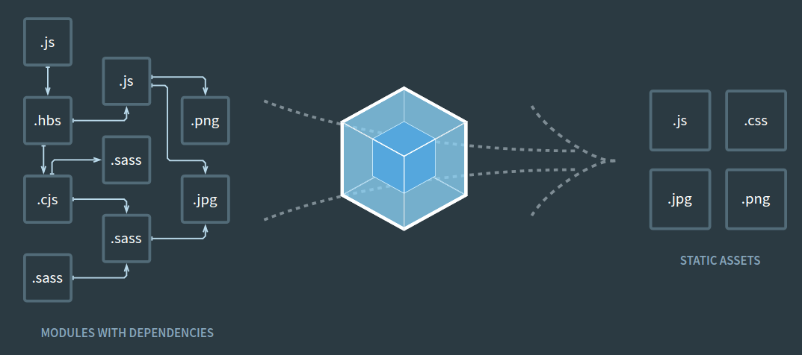

提高前端代码性能的最佳实践
前端开发是 Web 应用程序的基础。在本文中，我们将介绍各种优化应用前端性能的技术，如图像压缩、懒加载和浏览器缓存。
1、图片优化
图片压缩
您可能听说过压缩图像，但您知道它是如何工作的吗？图像压缩是在不影响图像质量的情况下减小图像大小的过程。压缩图像可以提高网页性能。
有两种类型的压缩：无损压缩和有损压缩。无损保留图像质量。有损可能会造成一些质量损失，通常用于人眼可能无法察觉质量差异的 Web 应用程序。
下面是一些工具可以帮助您压缩 Web 应用程序的图像，如 TinyPNG、SVGOMG、Squoosh.app、Compressor.io、JPEGmini 和 Kraken.io。
使用现代图片格式
对于图片，您可以使用多种不同的格式。但如果您想确保您的网站得到优化，那么使用现代图像格式是正确的选择。
通过利用这些更高级的文件类型（如 WebP、AVIF、FLIF 和 HEIF），您可以获得比 JPEG 和 PNG 等传统格式更好的压缩率，这意味着访问者的加载速度更快！
要使用这些现代图像格式，您应确保它们在各种浏览器上都能得到支持，如果不支持，请使用 picture 元素添加 PNG 作为备用。
<picture >
< source type = "image/avif" srcset = "image.avif" >
<img src = "image.png" alt = "Image" >
</ picture >懒加载图像
懒加载是一种通过仅加载用户可见的图像而不是一次加载所有图像来帮助提高网站性能和速度的技术。可以使用 img 元素并将 loading 属性设置为lazy来实现。
<img src="image.jpg" alt="Image" loading="lazy" width="400" height="300">对于不支持 loading 属性的旧版浏览器，可以使用 JavaScript 手动实现延迟加载。这有助于通过仅加载可见或即将可见的图像来减少页面加载时间并改善用户体验。
2、缩小和压缩代码
缩小 HTML、CSS 和 JavaScript
可以删除源代码中不必要的字符，从而减小文件大小，提高网站性能。这可应用于 HTML、CSS、JavaScript 和其他类型的源代码。
大多数开发人员在创建 HTML、CSS 和 JavaScript 文件时在代码中使用空格和注释，以使其可读，这有利于自己和他人理解代码。
不过，在为页面渲染到浏览器时，您应该考虑删除注释和未使用的代码、简化变量名并删除空格。精简的版本不会删除页面的任何功能。
出于开发目的，保留代码的非精简版本非常重要。有多种工具可用于缩小源代码，例如 minifer.org、HTMLMinifer、CSS Minifer 和 JSMinify。
使用构建工具
构建工具可自动构建和部署 Web 应用程序。它可以简化开发并自动执行代码缩小、转译和资产优化任务。常用的工具包括 Webpack 和 Parcel。这些工具有助于提高性能和可维护性。

应用 Gzip 压缩
Gzip 压缩是一种减少从服务器发送到 Web 浏览器的文件大小的技术，从而提高网站的性能和速度。它可以通过 FTP 客户端或 CPanel 进行设置。
Gzip 压缩还可用于优化图像的大小而不影响其质量。图片上传到服务器，用 Gzip 压缩后再传回。
Gzip 压缩可以节省存储空间，提高网络数据传输效率，是提高网站性能和用户体验的有效工具。
使用 CDN
内容分发网络(CDN)是一种地理位置分散的服务器，可跨不同国家/地区分发Web内容。它通过共享您的网站内容来发挥作用。
例如，视频、图片等内容存储在全球多个服务器上，因此无论用户从哪里请求，都能快速访问。
CDN 是一种通过在服务器网络上分发图像和视频等内容来提高网站性能和可用性的系统。
CDN 可以帮助改善用户体验、防止分布式拒绝服务 (DDoS) 攻击、通过更快的加载时间提高搜索引擎优化 (SEO) 排名并通过分散网站服务器上的负载来提高可用性，从而为网站带来显着的好处。
3、减少请求数量
合并文件
作为一名网站开发人员，您可能希望合并多个文件，以加快网站加载速度。这有助于提高页面加载速度，减少服务器负载，最终实现双赢！
合并文件的方法有多种，例如：
- 在 Linux 中执行命令
cat 1.txt 2.txt 3.txt > 0.txt 在此示例中，我们使用 cat 和 > 进行 shell 重定向。这会将 1.txt、2.txt 和 3.txt 合并为 0.txt。
-
另一种方法是使用 ZIP 或 TAR 压缩器。它允许你创建一个包含多个文件的压缩包。
-
您还可以使用文本编辑器将多个文件合并为一个文件。
使用浏览器缓存
缓存可存储临时保存的图像、文本和网页等数据，以便快速响应未来的请求。
当您第一次访问某个网站时，您的信息将存储在浏览器缓存中，因此当您再次访问时，它会从缓存中加载您的信息，这样会更快并减少加载时间。它还可以节省网络带宽。
重构代码以减少请求
重构包括在不改变代码原有功能的情况下重组代码。目标是通过遵循简洁代码原则来改进代码的结构和设计。
重构代码可以让您和其他开发人员在将来更好的理解和维护代码。
何时应该重构代码呢？
-
当需要更新代码库以使用新技术、新库等时。
-
当你遇到重复的代码时。
-
如果您的代码未遵循最佳实践。
如何重构我的代码？
-
删除未使用的代码。
-
重新命名变量、方法和类，以反映其用途(见名知意)。
-
将大的复杂的函数分解成更小、更易读的函数。
重构可以让开发人员更容易阅读和理解您的代码，并乐于为您的代码做出贡献。
优化关键渲染路径
这是浏览器将 HTML、CSS 和 JavaScript 完美地显示在屏幕上的一系列步骤。它通过 DOM 和 CSSOM 的渲染树来显示。
重要的是要优化文件，使用单个 CSS 文件而不是多个 CSS 文件，并确保 CSS 位于脚本标签之前，以便在脚本执行之前显示网页的样式。
按正确的顺序排列文件可以缩短页面的加载时间。建议您遵循以下几个策略：
<!DOCTYPE html>
<html lang="en">
<head>
<meta charset="UTF-8">
<meta http-equiv="X-UA-Compatible" content="IE=edge">
<meta name="viewport" content="width=device-width, initial-scale=1.0">
<title>Document</title>
</head>
<body>
<h1>Optimizing the Order of Styles and Scripts</h1>
<script src="index.js"></script>
</body>
</html>-
HTML 中的样式标签应位于 head 标签的内部。这一点很重要，因为在呈现 HTML 之后，它应该先呈现 CSS，然后才是 JavaScript。
-
您还应该将 JavaScript 标记放在 body 标记的底部。这样可以使 HTML 和 CSS 优先加载，从而提高页面性能。
-
需要加载的样式和脚本越多，页面加载的时间就越长。建议尽量减少页面上的样式和脚本数量。
4、网络传输性能检测工具—— PageSpeed
我们还可以使用 PageSpeed 工具分析和优化您的网站
访问地址 https://pagespeed.web.dev/

以上即是我们优化网站前端性能的常用策略。
引用链接
[1] TinyPNG: https://tinypng.com/[2] SVGOMG: https://jakearchibald.github.io/svgomg/[3] Squoosh.app: https://squoosh.app/[4] Compressor.io: https://compressor.io/[5] JPEGmini: https://www.jpegmini.com/[6] Kraken.io: https://kraken.io/[7] minifer.org: https://www.minifier.org/[8] HTMLMinifer: https://www.willpeavy.com/tools/minifier/[9] CSS Minifer: https://www.toptal.com/developers/cssminifier[10] JSMinify: https://jsminify.org/[11] Webpack: https://webpack.js.org/[12] Parcel: https://parceljs.org/[13] https://pagespeed.web.dev/: https://pagespeed.web.dev/